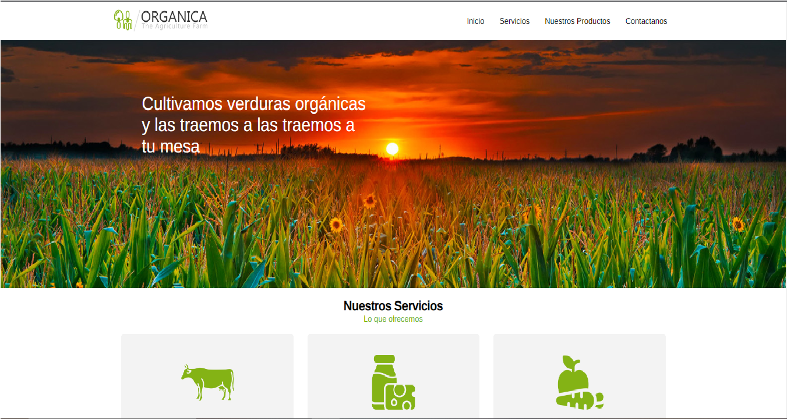
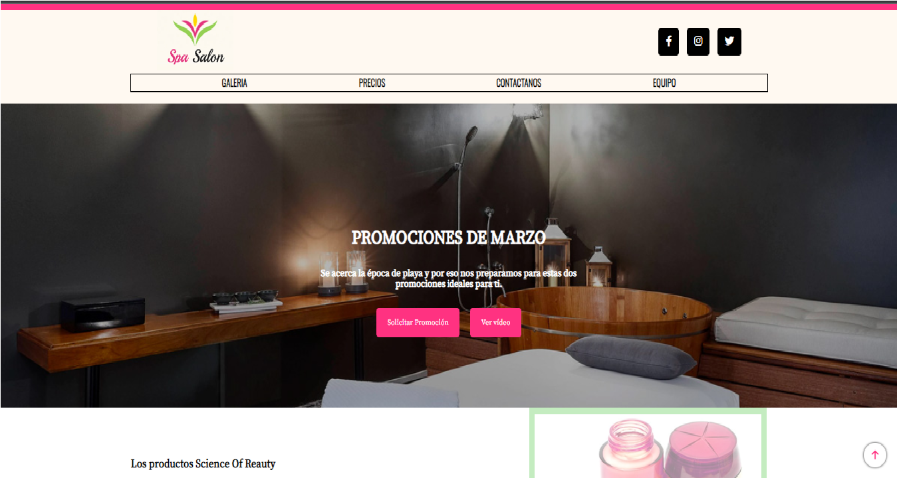
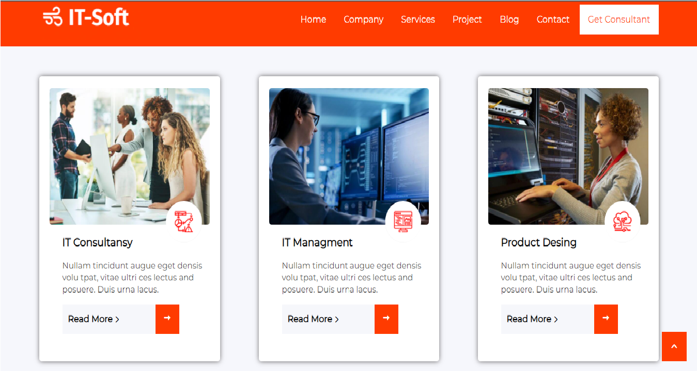

Mis proyectos recientes
Estos son algunos proyectos que he creado recientemente...




Soy pasante de Ingeniería en Sistemas Computacionales, soy integrante del grupo TECNOLOchicas PRO. Me apasiona muchisímo el área de la programación web, actualmente curso la especialidad de Tecnologías e Innovación y me gustaria aprender mucho más sobre el área.
Descargar CVDesarrollo Web
Tengo 2 años de experiencia en el área de desarrollo Web Responsive, actualmente estoy tomando un curso en Technolochicas PRO, certificandome en Diseño y Desarrollo de Sitos Web, con diferentes tecnologías.
Diseños
Realizo diseño de logos, páginas web responsives, implementando la gama de colores y ajustable a los gustos del cliente o al giro del negocio para el cual se vaya a diseñar.
Estudiante
Soy Estudiante de la carrera Ingenieria en Sistemas Computacionales, teniendo de la especialidad en Tecnologías e Inovación (TEI) y actualmente soy programadora Front-End en el programa Technolochicas PRO

Enedi ha desarrollado de manera eficiente sus habilidades en programación front-end, demostró ser una gran estudiante y bastante colaborativa con sus compañeras.
Nancy Salazar
Gerente de proyectos en DesarrolloWeb
Enedi es una compañera de trabajo muy activa, siempre busca la manera de como ayudar y solucionar los problemas que surgan, es una de las personas más proactivas y organizadas que conozco.
Andrea Canto Canche
Desarrolladora Front-End Jr.
Enedi es una persona muy entusiasta, siempre busca la manera de como aprender algo que no conoce y así poder ayudar a su equipo si se necesita, eres de las personas on mas organización y responsable que conozco, la recomiendo ampliamente.
Eduardo Cauich Chuil
Programador Back-End Jr.